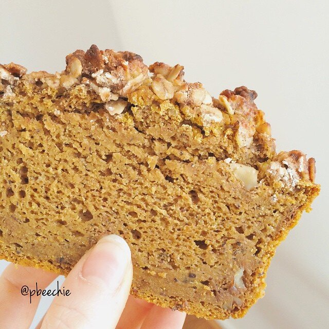

Maple Walnut Crumble Pumpkin Loaf

I did more baking-to-forcefeed-others last night and whoa. Got lost in the Internet and found this blog recipe I couldn't resist. I made some tweaks and adjustments based on my preferences, and it came out amaaaazing. It's a vegan maple walnut crumble pumpkin bread!! It's called "bread" but it's like CAKE. Soo moist and sweet. As amazing as the moistness of the cake part is, I'd have to say the crumble is my favorite part of it. I stuffed my coworkers with it and they loved it! It's described as a banana bread but pumpkin form.
OH and I got my broken foot checked on yesterday, and I got upgraded from a cast to a boot since I'm healing so well. :DD I'd like to thank tofu and salmon for my outstanding healing powers. Definitely gonna keep eating calcium & vitamin D through my food; I truly believe it's what's helping. Soo excited with the progress. Although I do miss the cute purple color of my cast, ha.
Maple Walnut Crumble Pumpkin Loaf
Makes: 12 slices
Adapted from: Ceara's Kitchen
Crumble
-
3 TBSP crushed walnuts
-
2 TBSP coconut oil, solid
-
2 TBSP maple syrup (I use sugar free syrup)
-
1/2 tsp cinnamon
-
3 TBSP flour (I use buckwheat)
-
1/4 cup raw oats
Bread
-
1 TBSP apple cider vinegar
-
1.25 cups unsweetened almond milk
-
1.5 cups pumpkin purée
-
1/4 cup melted coconut oil
-
1 tsp vanilla extract
-
1/4 cup maple syrup (I use sugar free syrup)
-
1.5 cups whole wheat flour (or whole wheat pastry flour)
-
1/2 cup buckwheat flour (or more whole wheat)
-
1/3 cup coconut sugar (or 1/2 cup stevia)
-
2 tsp baking powder
-
1/2 tsp baking soda
-
1/2 tsp sea salt
-
1.5 tsp cinnamon
-
1/2 tsp ginger
-
1/2 tsp nutmeg
-
3 TBSP crushed walnuts
Preheat the oven to 350 F. First make the crumble by mixing all of the crumble ingredients in a small bowl. You can use the maple syrup, honey, or sugar free breakfast syrup (as I used). Set that to the side.
Then begin to make the loaf ingredients. Add the apple cider vinegar to the almond milk and let sit for a few minutes to create a vegan buttermilk. After 5-10 minutes, add the remaining wet ingredients (first 6 ingredients, up to the syrup) and mix thoroughly. In another bowl, mix the dry ingredients thoroughly. If you don't use coconut sugar, you can use 1/2 cup stevia or preferred sweetener. Once mixed, slowly stir the dry ingredients into the wet ingredients.
Spray a loaf pan with nonstick spray and pour your batter in. Sprinkle the crumble you made on top. Bake at 350 F for 50-60 minutes until a toothpick comes out clean when you poke it. Let cool. Cut into 12 slices and enjoy! It's amazing if you store it in the fridge and eat it cold.